La ficha de producto
Es la página donde se decide la compra. Ahora mismo el botón que más llama la atención es el de WhatsApp, y el de «Añadir al carrito» queda en blanco con un borde fino.
Parte de arriba, en ordenador
- «Añadir al carrito» en el verde de la marca, grande, y el corazón de favoritos en la misma fila.
- WhatsApp sigue estando, pero como botón secundario dentro del recuadro de tallas.
- Las tallas con borde normal y la elegida en oscuro. Con el borde discontinuo parecían agotadas.
- Debajo del título, la nota de Google (4,5 con 97 opiniones). La referencia del producto sale aparte, en pequeño, y no pegada al nombre.
- Aviso de cookies en una tarjeta pequeña con Aceptar y Rechazar. El actual dice «si continúas navegando consideramos que aceptas», y eso no vale con la normativa de protección de datos.
- En la cabecera, el contador del corazón ya no se corta por la derecha.
Arrastra para comparar
Detalles del producto
- El logo de la marca a un tamaño normal (antes ocupaba un recuadro enorme).
- Ficha técnica en una tabla compacta: «Para diario, para vestir» en una línea en vez de una fila gigante por dato.
- Faltas corregidas: «Caracteristícas», «Ortpédica», y en la descripción «muilitar», «ortopedica» o «contactenos».
La ficha en el móvil
En el móvil el botón de compra aparecía en la segunda pantalla y luego desaparecía al bajar. Ahora hay una barra fija abajo con el precio y el botón, que se quita sola cuando el botón principal está a la vista.
Al entrar
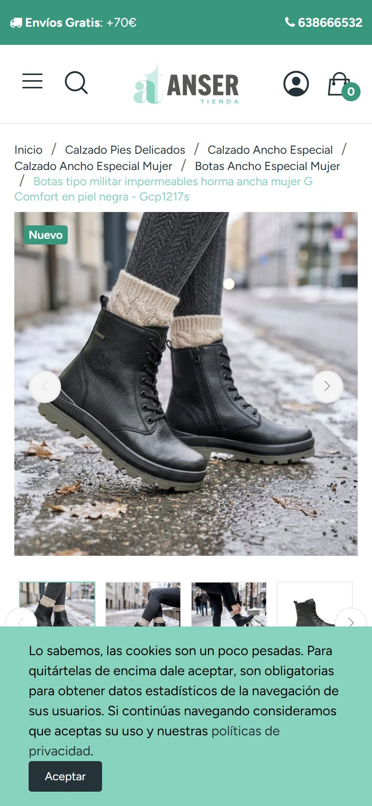
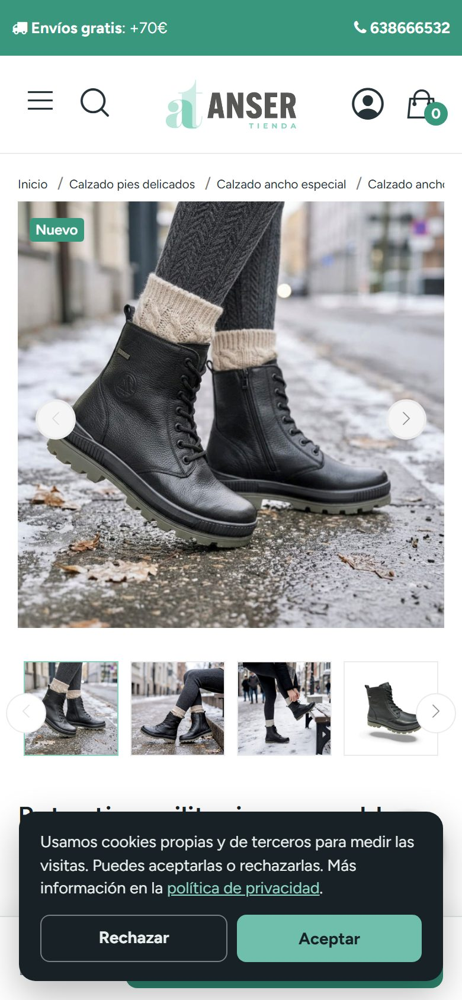
Precio, tallas y compra
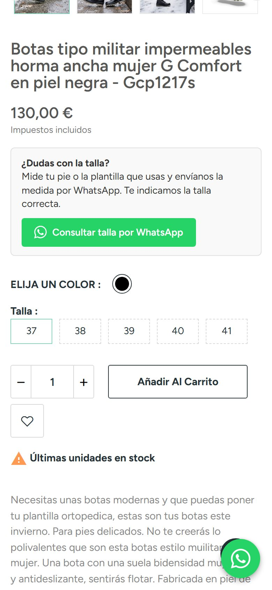
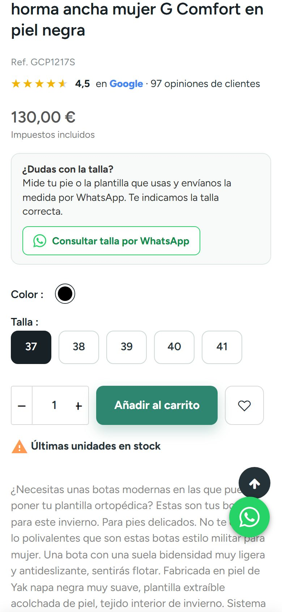
Leyendo la ficha técnica
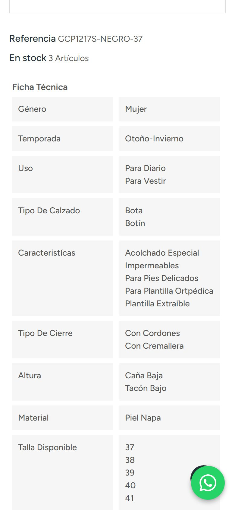
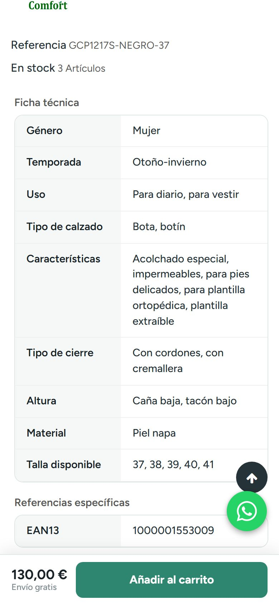
- Las migas de pan («Inicio / Calzado pies delicados / …») en una sola línea. Antes ocupaban cuatro antes de llegar a la foto.
- El corazón de favoritos ya no se queda solo en una línea aparte.
- El botón de WhatsApp y el de volver arriba, uno encima del otro sin montarse.
La portada en el móvil
La portada mide más de 20.000 píxeles en el móvil y el primer zapato con precio salía después de bajar más de seis pantallas. Hemos subido la fila de botas y botines justo después del bloque principal, sin quitar nada.
Primera pantalla
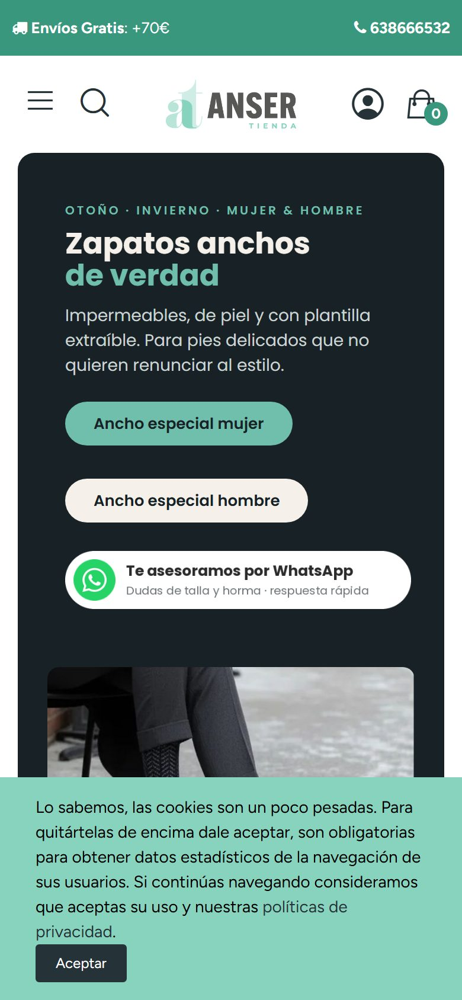
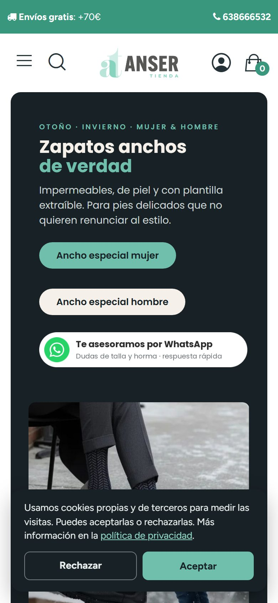
Segunda pantalla
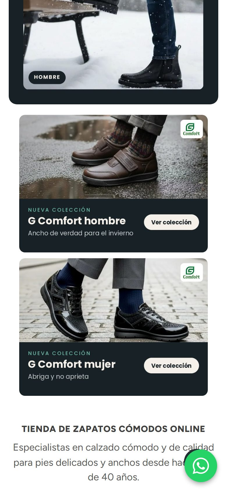
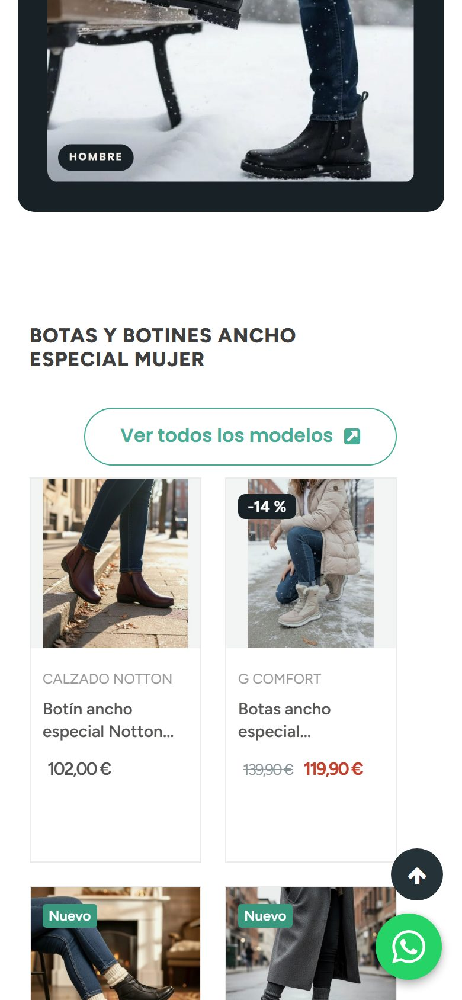
Tercera pantalla
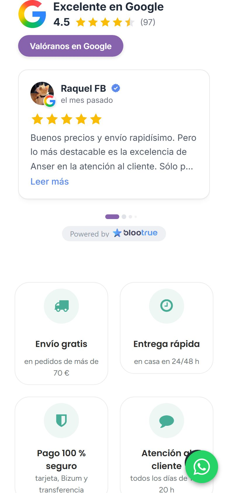
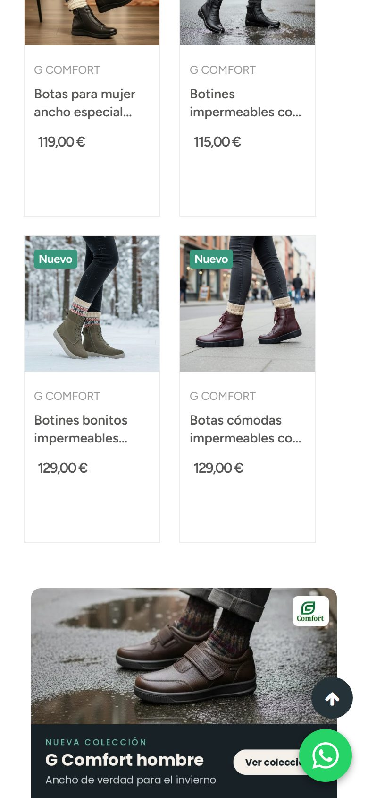
Las tarjetas de producto
Algunas tarjetas llevaban tres etiquetas a la vez («¡En oferta!», «Nuevo» y «-20,00 €») en un rojo que choca con el verde de la marca, y los nombres se cortaban en una línea.
- Una sola etiqueta con el descuento en porcentaje («-14 %»). Si el zapato está rebajado, no lleva además «Nuevo».
- Precio rebajado en un rojo más sobrio y el precio anterior tachado en gris.
- Nombres en dos líneas, sin la referencia al final.
- Las fotos de estudio sobre un gris muy suave, para que no queden como recortes blancos al lado de las fotos de ambiente.
- «Ver todos los modelos» alineado con el borde de la fila.
Botas y botines
Opiniones y detalles de toda la web
El carrusel de opiniones de Google usaba los colores de fábrica del widget (botón morado, enlaces azules). Ahora va con los de la marca.
- «Valóranos en Google», «Leer más» y los puntos del carrusel en verde Anser.
- Fuera las mayúsculas en cada palabra: «Añadir al carrito» en vez de «Añadir Al Carrito», «Botas y botines», «Tipo de calzado».